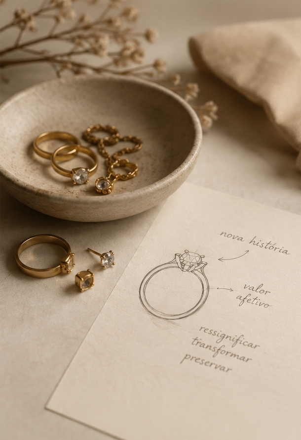

Cada joia que chega até nossa bancada carrega mais do que ouro, prata ou pedras. Ela carrega uma história.
Algumas histórias começam aqui. Outras encontram um novo significado.
Por meio da ourivesaria artesanal, criamos, restauramos e ressignificamos joias, preservando aquilo que o tempo jamais deveria apagar.
A nossa não começou com uma joia.
Começou com a vontade de criar algo que permanecesse.
Com o tempo, entendemos que o verdadeiro valor da ourivesaria não está apenas na transformação dos metais, mas na capacidade de preservar aquilo que cada joia representa.
Foi assim que nasceu a Hauquímia.
Um ateliê e oficina de ourivesaria onde cada criação começa pela escuta, continua pela técnica e encontra seu verdadeiro significado na história de quem a leva consigo.
Desde então, seguimos fazendo aquilo em que acreditamos:
dar forma a histórias e ressignificar joias que já carregam uma.

Nem toda joia precisa ser nova para representar algo novo.
No Second Hand, selecionamos joias que já tiveram uma história, restauramos cuidadosamente e as preparamos para encontrar um novo dono. Uma forma mais consciente de adquirir joias únicas, com qualidade e valor mais acessível.
No Upcycle, transformamos o que já existe em algo novo — preservando materiais, histórias e possibilidades.
Porque uma joia não precisa começar do zero para começar uma nova história.